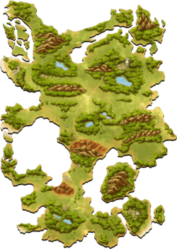
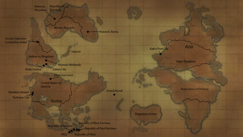

Story Arcs
Hunter Exam
Heaven's Arena
Yorknew City
Greed Island

Locations:
- Shiso Tree: This is the starting point of the game.
- Magic City of Masadora: This is the only place on the island where Spell Cards can be purchased.
- Spell Card Shop: Where players can purchase spell cards at a given price. When spell cards are used or players leave the game, the inventory of cards is replenished.
- Port City Soufrabi: A place where the player can find a method to leave Greed Island and return to the real world. It can be attained by bribing or knocking out the Harbor Master.
- The City of Love, Aiai: Filled with almost every 'romantic' scenario. Hisoka considers it a nice place to spend time.
- City of Prizes, Antokiba: Every month a different contest is held, with differing prizes for each month. Specified Slot Card can be won during the 'even' months. It is one of the two starting cities.
- Gambling City Dorias: Plenty of casinos are located here, and this is also where some cards can only be acquired by playing in here. The item "Risky Dice" can be useful here.
- Rubicuta: Another starting town in the game because of its short distance from the island's main entrance.
- Capital City, Limeiro: The capital of Greed Island that can only be accessed by those who have completed the Specified Slot Cards and won the End of Game Quiz to receive card #000 "Ruler's Blessing". Dwun and List live here.
- Port: The only port on the island and home of the Harbormaster; by defeating him the player gets a "Transport Ticket" card to leave the game. Elena, a Game Master, operates from a tower in the port city teleporting players out of the game.
- Badlands: A series of hills (composed of eroded sedimentary rocks) in dry terrain with minimal vegetation and inhabited by many monsters. It is where Gon and Killua were trained by Biscuit. Within its area, there is an abandoned town/camp and tunnels dug by Gon and Killua.
- Village of the Bandits from the Mountains: Where the Sick Villagers, that pose as bandits in the mountains, reside. Everyone in the village suffers from a curse, similar to an endemic disease that increases from a low to a high fever, fatal after one month. Once the player heals all of them, card #075 "Wild Luck Alexandrite" is given as a reward for the achievement.
- Bunzen: Little is known about this town or village to which Abengane returns after talking with Gon and Biscuit; his purpose there was, apparently, mainly to use the forest nearby the city entrance to perform the ritual involved in his Exorcism Nen ability.
- Trade Shops: Where players can buy information, deposit money, sell cards, and purchase cards[5] (other than the spell ones, including all the rank-B cards).
Location on the world map:

Chimera Ant
13th Hunter Chairman